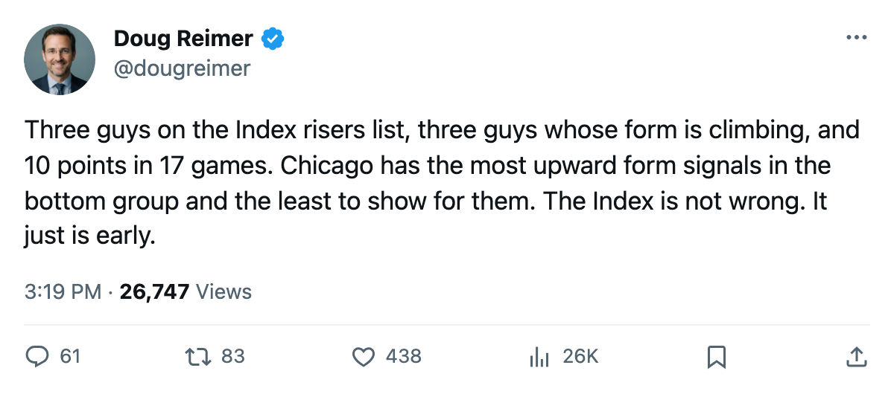

Chicago Has 3 of the Index's Top 20 Risers, the Worst Record in Hockey, and the 3rd-Highest Profit in the League
The Development Index is the only place pointing forward for a club with 10 points in 17 games and $27.06M in the bank.
 Doug ReimerAnalytics editor, ex-video coach · The Slot Report
Doug ReimerAnalytics editor, ex-video coach · The Slot Report Chicago Blackhawks has three players on the Bureau's Development Index risers list: Igor Radulov76 at +11,
Chicago Blackhawks has three players on the Bureau's Development Index risers list: Igor Radulov76 at +11,  Steve McCarthy77 at +8, and Ari Ahonen85 at +7. No club in the bottom six has more than two. The Panthers and Thrashers have zero; the Senators have none at all.
Steve McCarthy77 at +8, and Ari Ahonen85 at +7. No club in the bottom six has more than two. The Panthers and Thrashers have zero; the Senators have none at all.
The record says none of it matters yet. Chicago sits 2-10-4-1, 10 points in 17 games, minus-20 in goal differential, and 33 goals for: 1.94 a night, the lowest in the league. The cost per point is $4.87M, worst in hockey. The payroll is $48.74M, 4th cheapest. The profit is $27.06M, 3rd highest.
The Index risers, and what they have produced
| Player | Pos | Form | Overall | Age | GP | Pts | MPG |
|---|---|---|---|---|---|---|---|
| Igor Radulov | LW | +11 | 74 | 23 | 17 | 10 | 17.0 |
| Steve McCarthy | D | +8 | 75 | 24 | 17 | 5 | 22.0 |
| Ari Ahonen | G | +7 | 83 | 24 | 10 | — | — |
Radulov's +11 is tied for the 2nd-highest form gain in the league, behind only  Vaclav Nedorost80 at +12. He is 10 points in 17 games on a roster where the leading scorer from last season (Alexei Zhamnov, 78 overall) is gone. His 74 overall is not a number that wins games in this league. It is a number that suggests he might, in a year or two.
Vaclav Nedorost80 at +12. He is 10 points in 17 games on a roster where the leading scorer from last season (Alexei Zhamnov, 78 overall) is gone. His 74 overall is not a number that wins games in this league. It is a number that suggests he might, in a year or two.
McCarthy is the only Chicago defenseman with a form entry at all. Five points in 17 games at 22.0 minutes a night. The +8 is the Index saying he belongs on this roster; the five points is the record saying he does not yet.
Ahonen started 10 of 17 games and carries the 2nd-highest goalie overall on the club, 83. His base is 81. The +7 has him at the same level as  Garth Snow80 and one grade below
Garth Snow80 and one grade below  Curtis Joseph90. For a 24-year-old, that is a reasonable climb. For a team allowing 3.12 a night, it is not enough.
Curtis Joseph90. For a 24-year-old, that is a reasonable climb. For a team allowing 3.12 a night, it is not enough.
The one faller
 Jay Pandolfo66 is the only Chicago name on the Index fallers list. Form at -4, overall now 64, down from a base of 76. He has 1 point in 17 games at 30 years old. The -4 puts him below every other regular in the lineup. The club average morale is 88.4, 4th-lowest in the league.
Jay Pandolfo66 is the only Chicago name on the Index fallers list. Form at -4, overall now 64, down from a base of 76. He has 1 point in 17 games at 30 years old. The -4 puts him below every other regular in the lineup. The club average morale is 88.4, 4th-lowest in the league.
The money problem, and why it is not really a money problem
At $4.87M per point, Chicago is the most expensive team in hockey per unit of production. The next worst is  Phoenix Coyotes at $5.04M, and Phoenix has 11 points in 19 games. Chicago is 1 point behind with 2 fewer games played, so the per-point figure will rise further as games pile up without points.
Phoenix Coyotes at $5.04M, and Phoenix has 11 points in 19 games. Chicago is 1 point behind with 2 fewer games played, so the per-point figure will rise further as games pile up without points.
But the revenue is $44.82M. The profit is $27.06M. Only  Toronto Maple Leafs at $35.81M and
Toronto Maple Leafs at $35.81M and  Detroit Red Wings at $32.50M make more money per season. Attendance sits at 15,484 per game, above the league median, and the ticket price is $79. The building is paying for itself while the ice does not.
Detroit Red Wings at $32.50M make more money per season. Attendance sits at 15,484 per game, above the league median, and the ticket price is $79. The building is paying for itself while the ice does not.
What the GM said
Jason Hughes spoke to The Tunnel's Jan Kowalczyk after a 1-and-8 loss at home. He said the team is "short right now" and that the first-period collapse was the thing that told him something is wrong in the room they practice in. He also said he is not trading bodies off a roster that is already thinned. Quint is out until November 24 with an ankle. Daze and Sullivan are on the injury ledger. Henry is back.
8 spells and 55 days lost is middling. The problem is that the healthy players score 1.94 goals a night collectively.
Where this goes
The Index has three risers. The record has two wins. The payroll has room, and the profit funds the next 30 years of patience if the owner wants it.
Radulov is 23. McCarthy is 24. Ahonen is 24. None of them will move the needle from 10 points to 20 by March. The question the sheet poses is narrower: does the +11, the +8, and the +7 become the base for next October, or does it collapse back the way  Shane Willis72 (-4 at Pittsburgh) and
Shane Willis72 (-4 at Pittsburgh) and  Valeri Bure66 (-5 at Florida) suggest form gains at this level are fragile?
Valeri Bure66 (-5 at Florida) suggest form gains at this level are fragile?
The Index says Chicago is getting better. The table says nobody notices yet.
